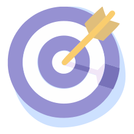

Онлайн-психотерапия становится комфортнее
 Свобода возможностей
Проходите сессию из любой точки мира, не тратьте время на дорогу
Свобода возможностей
Проходите сессию из любой точки мира, не тратьте время на дорогу
 Будьте уверены в своем выборе
Мы работаем только с квалифицированными специалистами, которые
прошли строгий отбор
Будьте уверены в своем выборе
Мы работаем только с квалифицированными специалистами, которые
прошли строгий отбор

Ваш запрос важен
Подберем опытного специалиста под ваш запрос